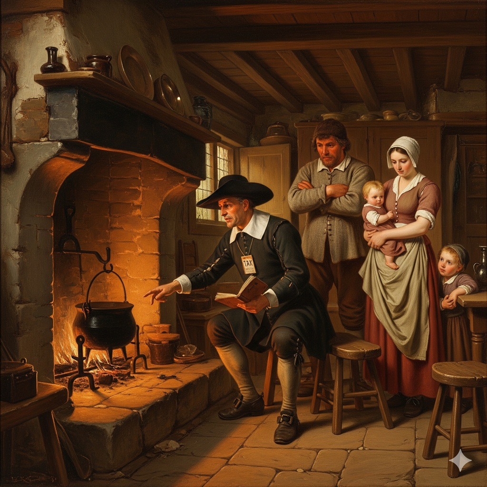

Hearth Tax in Lancashire
The hearth‑tax return of 1666 provides one of the most valuable mid‑17th‑century population records for Lancashire. Levied at two shillings per hearth, it effectively measured both the size and status of households. Rochdale Parish was one of the largest and most economically active in the region, with 1,267 chargeable hearths recorded across its townships. Although the return lists many substantial houses belonging to prominent local families, the Holt households stand out in several areas of the parish. Their distribution reveals a well‑established presence across the Pennine townships, with some branches occupying notably large dwellings.
A comparative record of all known Holt households across the four main hearth‑tax assessments

The hearth‑tax was collected multiple times between 1662 and 1674. Lancashire has four key surviving returns:- 1662 (first levy; patchy survival)
- 1664 (more complete)
- 1666 (best surviving return; the one you’ve been working with)
- 1672 (exemptions and chargeable hearths; very useful for continuity)
Below is a consolidated Holt‑only index, showing each Holt household and its hearth count across the available years.
Rochdale Parish
Rochdale Parish (Hundred of Salford)
This is the strongest Holt centre in Lancashire. Holt households between 1662–1672
Castleton Holt households, 1662–1672
| Name | 1662 | 1664 | 1666 | 1672 | Notes |
|---|---|---|---|---|---|
| Robert Holt | — | 14 | 15 | 14 | One of the largest houses in the parish; stable high‑status property. |
Wuerdle, Wardle & Blatchinworth Holt households, 1662–1672
| Name | 1662 | 1664 | 1666 | 1672 | Notes |
|---|---|---|---|---|---|
| Robert Holt | 10 | 11 | 11 | 10 | Large, stable Holt estate; likely same branch as Castleton Holts. |
Spotland (Nearer Side) Holt households, 1662–1672
| Name | 1662 | 1664 | 1666 | 1672 | Notes |
|---|---|---|---|---|---|
| Robert Holt | 3 | 3 | 3 | 3 | Consistent mid‑sized household. |
| John Holt | 1 | 1 | 1 | — | Drops out by 1672 (death or relocation). |
Butterworth (Freehold Side) Holt households, 1662–1672
| Name | 1662 | 1664 | 1666 | 1672 | Notes |
|---|---|---|---|---|---|
| John Holt | 2 | 2 | 2 | 2 | Stable small freehold. |
| James Holt | 1 | 1 | 1 | — | Present early; disappears by 1672. |
Todmorden & Walsden Holt households, 1662–1672
| Name | 1662 | 1664 | 1666 | 1672 | Notes |
|---|---|---|---|---|---|
| Abraham Holt | 1 | 1 | 1 | 1 | Small but persistent household. |
Bury Parish
Fewer Holt entries, but some continuity. Bury parish Holt households, 1662–1672
| Township | Name | 1662 | 1664 | 1666 | 1672 | Notes |
|---|---|---|---|---|---|---|
| Bury town – Henry Holt | Henry Holt | 2 | 2 | 2 | — | Mid‑sized house; disappears by 1672. |
| Bury town – John Holt | John Holt | 1 | 1 | 1 | 1 | Small but stable. |
Manchester, Prestwich and Oldham region
Scattered Holt entries. Manchester, Prestwich and Oldham Holt households, 1662–1672
| Parish | Name | 1662 | 1664 | 1666 | 1672 | Notes |
|---|---|---|---|---|---|---|
| Prestwich – Richard Holt | Richard Holt | 1 | 1 | 1 | — | Modest household. |
| Oldham – Thomas Holt | Thomas Holt | — | 1 | 1 | 1 | Appears mid‑period and persists. |
Blackburn Hundred (Rossendale, Haslingden, Whalley)
Blackburn Hundred Holt households, 1662–1672
| Township | Name | 1662 | 1664 | 1666 | 1672 | Notes |
|---|---|---|---|---|---|---|
| Haslingden – Thomas Holt | Thomas Holt | 2 | 2 | 2 | 2 | Stable mid‑sized house. |
| Rossendale – Richard Holt | Richard Holt | 1 | 1 | 1 | — | Drops out by 1672. |
West Derby Hundred (Liverpool region)
Sparse Holt presence. West Derby Hundred Holt households, 1662–1672
| Township | Name | 1662 | 1664 | 1666 | 1672 | Notes |
|---|---|---|---|---|---|---|
| Prescot – Isabel Holt | Isabel Holt | 1 | 1 | 1 | — | Lone western Holt entry. |
| Childwall – William Holt | William Holt | — | 1 | 1 | 1 | Small but persistent. |
Lonsdale Hundred (North Lancashire)
Very limited Holt presence. Lonsdale Hundred Holt households, 1662–1672
| Township | Name | 1662 | 1664 | 1666 | 1672 | Notes |
|---|---|---|---|---|---|---|
| Tatham – Christopher Holt | Christopher Holt | 1 | 1 | 1 | — | Northern outlier. |
The hearth‑tax returns of 1662–1672 reveal a family deeply embedded in the landscape of Lancashire. The Castleton and Wuerdle/Wardle Holts stand out as major landholders, while the Spotland, Butterworth, and Haslingden branches show the breadth of the surname’s reach. Smaller households in Todmorden, Oldham, and West Derby demonstrate that the Holt name was not confined to a single social class or region.